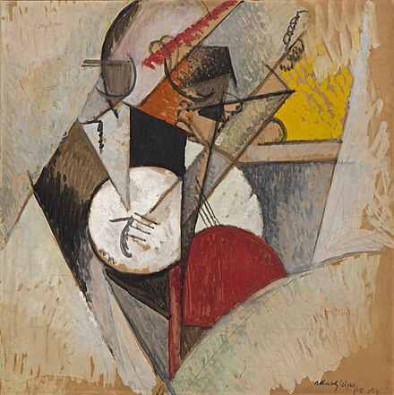
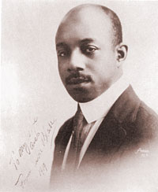
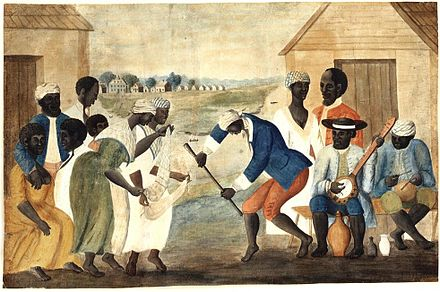
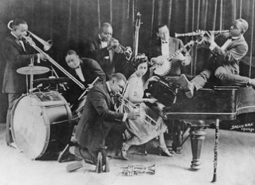
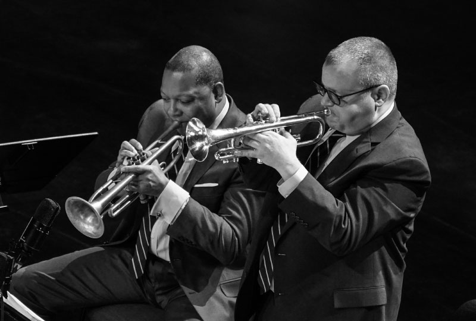
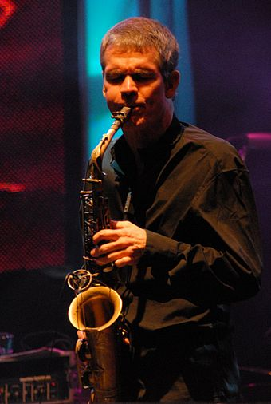
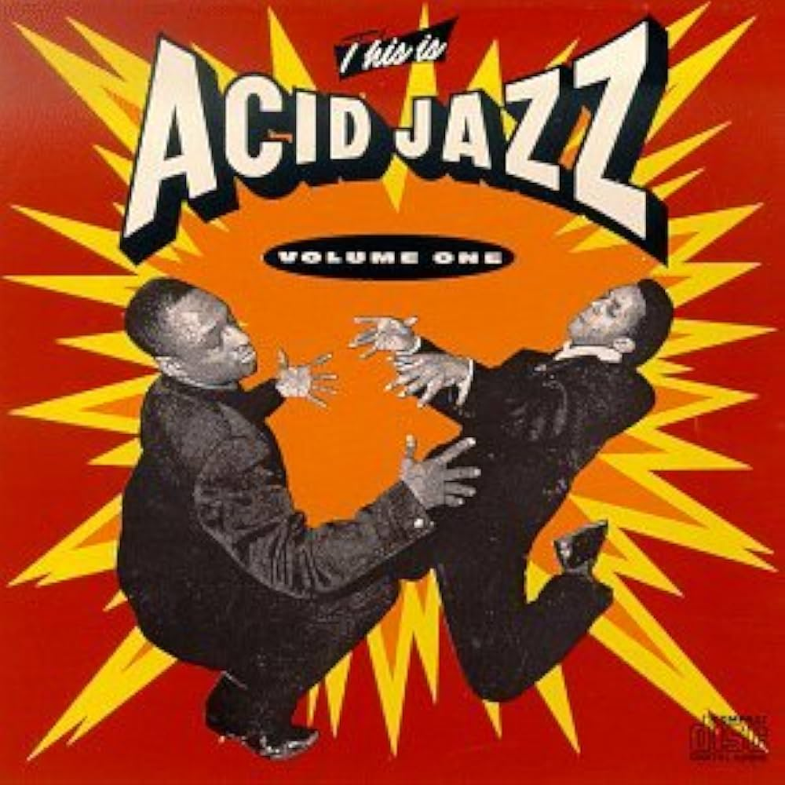
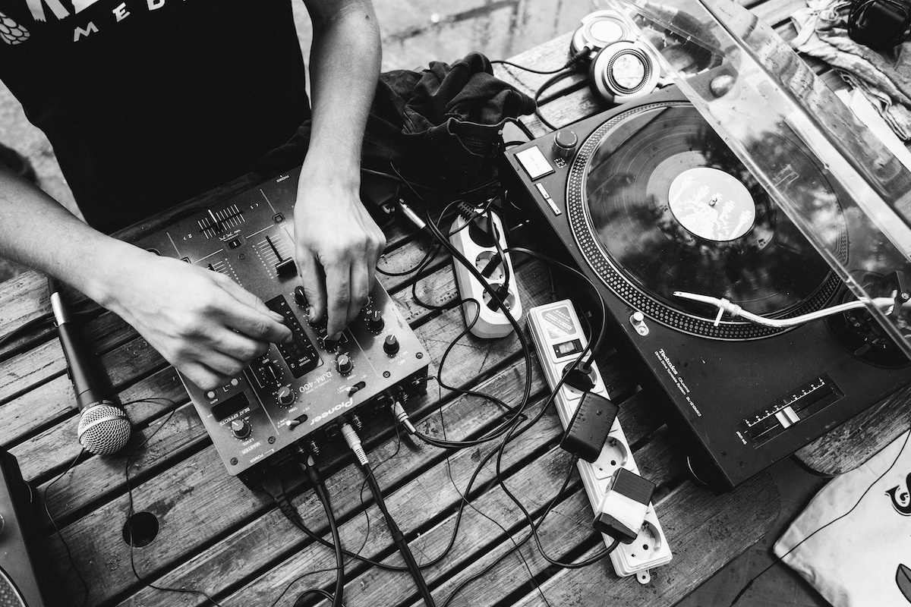

Jazz
Table of Contents
Introduction
Jazz is a music genre that originated in the African-American communities of New Orleans, Louisiana, in the late 19th and early 20th centuries, with its roots in blues, ragtime, European harmony and African rhythmic rituals. Since the 1920s Jazz Age, it has been recognized as a major form of musical expression in traditional and popular music. Jazz is characterized by swing and blue notes, complex chords, call and response vocals, polyrhythms and improvisation.

As jazz spread around the world, it drew on national, regional, and local musical cultures, which gave rise to different styles. New Orleans jazz began in the early 1910s, combining earlier brass band marches, French quadrilles, biguine, ragtime and blues with collective polyphonic improvisation. However, jazz did not begin as a single musical tradition in New Orleans or elsewhere.In the 1930s, arranged dance-oriented swing big bands, Kansas City jazz (a hard-swinging, bluesy, improvisational style), and gypsy jazz (a style that emphasized musette waltzes) were the prominent styles. Bebop emerged in the 1940s, shifting jazz from danceable popular music toward a more challenging "musician's music" which was played at faster tempos and used more chord-based improvisation. Cool jazz developed near the end of the 1940s, introducing calmer, smoother sounds and long, linear melodic lines.
The mid-1950s saw the emergence of hard bop, which introduced influences from rhythm and blues, gospel, and blues to small groups and particularly to saxophone and piano. Modal jazz developed in the late 1950s, using the mode, or musical scale, as the basis of musical structure and improvisation, as did free jazz, which explored playing without regular meter, beat and formal structures. Jazz-rock fusion appeared in the late 1960s and early 1970s, combining jazz improvisation with rock music's rhythms, electric instruments, and highly amplified stage sound. In the early 1980s, a commercial form of jazz fusion called smooth jazz became successful, garnering significant radio airplay. Other styles and genres abound in the 21st century, such as Latin and Afro-Cuban jazz.
Etymology and definition
The origin of the word jazz has resulted in considerable research, and its history is well documented. It is believed to be related to jasm, a slang term dating back to 1860 meaning 'pep, energy'.The earliest written record of the word is in a 1912 article in the Los Angeles Times in which a minor league baseball pitcher described a pitch which he called a 'jazz ball' "because it wobbles and you simply can't do anything with it".

The use of the word in a musical context was documented as early as 1915 in the Chicago Daily Tribune. Its first documented use in a musical context in New Orleans was in a November 14, 1916, Times-Picayune article about "jas bands". In an interview with National Public Radio, musician Eubie Blake offered his recollections of the slang connotations of the term, saying: "When Broadway picked it up, they called it 'J-A-Z-Z'. It wasn't called that. It was spelled 'J-A-S-S'. That was dirty, and if you knew what it was, you wouldn't say it in front of ladies." The American Dialect Society named it the Word of the 20th Century.

Elements
Improvisation
Although jazz is considered difficult to define, in part because it contains many subgenres, improvisation is one of its defining elements. The centrality of improvisation is attributed to the influence of earlier forms of music such as blues, a form of folk music which arose in part from the work songs and field hollers of African-American slaves on plantations. These work songs were commonly structured around a repetitive call-and-response pattern, but early blues was also improvisational. Classical music performance is evaluated more by its fidelity to the musical score, with less attention given to interpretation, ornamentation, and accompaniment. The classical performer's goal is to play the composition as it was written. In contrast, jazz is often characterized by the product of interaction and collaboration, placing less value on the contribution of the composer, if there is one, and more on the performer. The jazz performer interprets a tune in individual ways, never playing the same composition twice. Depending on the performer's mood, experience, and interaction with band members or audience members, the performer may change melodies, harmonies, and time signatures.
In early Dixieland, a.k.a. New Orleans jazz, performers took turns playing melodies and improvising countermelodies. In the swing era of the 1920s-'40s, big bands relied more on arrangements which were written or learned by ear and memorized. Soloists improvised within these arrangements. In the bebop era of the 1940s, big bands gave way to small groups and minimal arrangements in which the melody was stated briefly at the beginning and most of the piece was improvised. Modal jazz abandoned chord progressions to allow musicians to improvise even more. In many forms of jazz, a soloist is supported by a rhythm section of one or more chordal instruments (piano, guitar), double bass, and drums. The rhythm section plays chords and rhythms that outline the composition structure and complement the soloist. In avant-garde and free jazz, the separation of soloist and band is reduced, and there is license, or even a requirement, for the abandoning of chords, scales, and meters.
Traditionalism
Since the emergence of bebop, forms of jazz that are commercially oriented or influenced by popular music have been criticized. According to Bruce Johnson, there has always been a "tension between jazz as a commercial music and an art form". Regarding the Dixieland jazz revival of the 1940s, Black musicians rejected it as being shallow nostalgia entertainment for white audiences. On the other hand, traditional jazz enthusiasts have dismissed bebop, free jazz, and jazz fusion as forms of debasement and betrayal. An alternative view is that jazz can absorb and transform diverse musical styles. By avoiding the creation of norms, jazz allows avant-garde styles to emerge.
If you are interested in learning more about the elements of jazz, click here.
Early development
Jazz originated in the late-19th to early-20th century. It developed out of many forms of music, including blues, spirituals, hymns, marches, vaudeville song, ragtime, and dance music. It also incorporated interpretations of American and European classical music, entwined with African and slave folk songs and the influences of West African culture. Its composition and style have changed many times throughout the years with each performer's personal interpretation and improvisation, which is also one of the greatest appeals of the genre.
African rhythmic retention
The Black Codes outlawed drumming by slaves, which meant that African drumming traditions were not preserved in North America, unlike in Cuba, Haiti, and elsewhere in the Caribbean. African-based rhythmic patterns were retained in the United States in large part through "body rhythms" such as stomping, clapping, and patting juba dancing.
In the opinion of jazz historian Ernest Borneman, what preceded New Orleans jazz before 1890 was "Afro-Latin music", similar to what was played in the Caribbean at the time. A three-stroke pattern known in Cuban music as tresillo is a fundamental rhythmic figure heard in many different slave musics of the Caribbean, as well as the Afro-Caribbean folk dances performed in New Orleans Congo Square and Gottschalk's compositions (for example "Souvenirs From Havana" (1859)). Tresillo (shown below) is the most basic and most prevalent duple-pulse rhythmic cell in sub-Saharan African music traditions and the music of the African Diaspora.
Tresillo is heard prominently in New Orleans second line music and in other forms of popular music from that city from the turn of the 20th century to present. "By and large the simpler African rhythmic patterns survived in jazz ... because they could be adapted more readily to European rhythmic conceptions," jazz historian Gunther Schuller observed. "Some survived, others were discarded as the Europeanization progressed."
In the post-Civil War period (after 1865), African Americans were able to obtain surplus military bass drums, snare drums and fifes, and an original African-American drum and fife music emerged, featuring tresillo and related syncopated rhythmic figures. This was a drumming tradition that was distinct from its Caribbean counterparts, expressing a uniquely African-American sensibility. "The snare and bass drummers played syncopated cross-rhythms," observed the writer Robert Palmer, speculating that "this tradition must have dated back to the latter half of the nineteenth century, and it could have not have developed in the first place if there hadn't been a reservoir of polyrhythmic sophistication in the culture it nurtured."

Afro-cuban influence
African-American music began incorporating Afro-Cuban rhythmic motifs in the 19th century when the habanera (Cuban contradanza) gained international popularity. Musicians from Havana and New Orleans would take the twice-daily ferry between both cities to perform, and the habanera quickly took root in the musically fertile Crescent City. John Storm Roberts states that the musical genre habanera "reached the U.S. twenty years before the first rag was published." For the more than quarter-century in which the cakewalk, ragtime, and proto-jazz were forming and developing, the habanera was a consistent part of African-American popular music.
Habaneras were widely available as sheet music and were the first written music which was rhythmically based on an African motif (1803). From the perspective of African-American music, the "habanera rhythm" (also known as "congo"), "tango-congo", or tango, can be thought of as a combination of tresillo and the backbeat. The habanera was the first of many Cuban music genres which enjoyed periods of popularity in the United States and reinforced and inspired the use of tresillo-based rhythms in African-American music.
Ragtime
The abolition of slavery in 1865 led to new opportunities for the education of freed African Americans. Although strict segregation limited employment opportunities for most blacks, many were able to find work in entertainment. Black musicians were able to provide entertainment in dances, minstrel shows, and in vaudeville, during which time many marching bands were formed. Black pianists played in bars, clubs, and brothels, as ragtime developed.
Blues
African genesis
Blues is the name given to both a musical form and a music genre, which originated in African-American communities of primarily the Deep South of the United States at the end of the 19th century from their spirituals, work songs, field hollers, shouts and chants and rhymed simple narrative ballads.
The African use of pentatonic scales contributed to the development of blue notes in blues and jazz. As Kubik explains:

Many of the rural blues of the Deep South are stylistically an extension and merger of basically two broad accompanied song-style traditions in the west central Sudanic belt:
- A strongly Arabic/Islamic song style, as found for example among the Hausa. It is characterized by melisma, wavy intonation, pitch instabilities within a pentatonic framework, and a declamatory voice.
- An ancient west central Sudanic stratum of pentatonic song composition, often associated with simple work rhythms in a regular meter, but with notable off-beat accents.
Types of jazz
Straight-ahead jazz
The 1980s saw something of a reaction against the fusion and free jazz that had dominated the 1970s. Trumpeter Wynton Marsalis emerged early in the decade, and strove to create music within what he believed was the tradition, rejecting both fusion and free jazz and creating extensions of the small and large forms initially pioneered by artists such as Louis Armstrong and Duke Ellington, as well as the hard bop of the 1950s. It is debatable whether Marsalis' critical and commercial success was a cause or a symptom of the reaction against Fusion and Free Jazz and the resurgence of interest in the kind of jazz pioneered in the 1960s (particularly modal jazz and post-bop); nonetheless there were many other manifestations of a resurgence of traditionalism, even if fusion and free jazz were by no means abandoned and continued to develop and evolve.

For example, several musicians who had been prominent in the fusion genre during the 1970s began to record acoustic jazz once more, including Chick Corea and Herbie Hancock. Other musicians who had experimented with electronic instruments in the previous decade had abandoned them by the 1980s; for example, Bill Evans, Joe Henderson, and Stan Getz. Even the 1980s music of Miles Davis, although certainly still fusion, adopted a far more accessible and recognizably jazz-oriented approach than his abstract work of the mid-1970s, such as a return to a theme-and-solos approach.
Click here to learn more about the many types of jazz.
Smooth jazz
In the early 1980s, a commercial form of jazz fusion called "pop fusion" or "smooth jazz" became successful, garnering significant radio airplay in "quiet storm" time slots at radio stations in urban markets across the U.S. This helped to establish or bolster the careers of vocalists including Al Jarreau, Anita Baker, Chaka Khan, and Sade, as well as saxophonists including Grover Washington Jr., Kenny G, Kirk Whalum, Boney James, and David Sanborn. In general, smooth jazz is downtempo (the most widely played tracks are of 90-105 beats per minute), and has a lead melody-playing instrument (saxophone, especially soprano and tenor, and legato electric guitar are popular).

Acid jazz, nu jazz, and jazz rap
Acid jazz developed in the UK in the 1980s and 1990s, influenced by jazz-funk and electronic dance music. Acid jazz often contains various types of electronic composition (sometimes including sampling or live DJ cutting and scratching), but it is just as likely to be played live by musicians, who often showcase jazz interpretation as part of their performance. Richard S. Ginell of AllMusic considers Roy Ayers "one of the prophets of acid jazz".

Nu jazz is influenced by jazz harmony and melodies, and there are usually no improvisational aspects. It can be very experimental in nature and can vary widely in sound and concept. It ranges from the combination of live instrumentation with the beats of jazz house (as exemplified by St Germain, Jazzanova, and Fila Brazillia) to more band-based improvised jazz with electronic elements (for example, The Cinematic Orchestra, Kobol and the Norwegian "future jazz" style pioneered by Bugge Wesseltoft, Jaga Jazzist, and Nils Petter Molvær).
Jazz rap developed in the late 1980s and early 1990s and incorporates jazz influences into hip hop. In 1988, Gang Starr released the debut single "Words I Manifest", which sampled Dizzy Gillespie's 1962 "Night in Tunisia", and Stetsasonic released "Talkin' All That Jazz", which sampled Lonnie Liston Smith. Gang Starr's debut LP No More Mr. Nice Guy (1989) and their 1990 track "Jazz Thing" sampled Charlie Parker and Ramsey Lewis. The groups which made up the Native Tongues Posse tended toward jazzy releases: these include the Jungle Brothers' debut Straight Out the Jungle (1988), and A Tribe Called Quest's People's Instinctive Travels and the Paths of Rhythm (1990) and The Low End Theory (1991). Rap duo Pete Rock & CL Smooth incorporated jazz influences on their 1992 debut Mecca and the Soul Brother. Rapper Guru's Jazzmatazz series began in 1993 using jazz musicians during the studio recordings.

The mid-2010s saw an increased influence of R&B, hip-hop, and pop music on jazz. In 2015, Kendrick Lamar released his third studio album, To Pimp a Butterfly. The album heavily featured prominent contemporary jazz artists such as Thundercat and redefined jazz rap with a larger focus on improvisation and live soloing rather than simply sampling. In that same year, saxophonist Kamasi Washington released his nearly three-hour long debut, The Epic. Its hip-hop inspired beats and R&B vocal interludes was not only acclaimed by critics for being innovative in keeping jazz relevant,[213] but also sparked a small resurgence in jazz on the internet.
Punk jazz and jazzcore
The relaxation of orthodoxy which was concurrent with post-punk in London and New York City led to a new appreciation of jazz. In London, the Pop Group began to mix free jazz and dub reggae into their brand of punk rock. In New York, No Wave took direct inspiration from both free jazz and punk. Examples of this style include Lydia Lunch's Queen of Siam, Gray, the work of James Chance and the Contortions (who mixed Soul with free jazz and punk) and the Lounge Lizards (the first group to call themselves "punk jazz").
John Zorn took note of the emphasis on speed and dissonance that was becoming prevalent in punk rock, and incorporated this into free jazz with the release of the Spy vs. Spy album in 1986, a collection of Ornette Coleman tunes done in the contemporary thrashcore style. In the same year, Sonny Sharrock, Peter Brötzmann, Bill Laswell, and Ronald Shannon Jackson recorded the first album under the name Last Exit, a similarly aggressive blend of thrash and free jazz. These developments are the origins of jazzcore, the fusion of free jazz with hardcore punk.
Electronic jazz
Although jazz-rock fusion reached the height of its popularity in the 1970s, the use of electronic instruments and rock-derived musical elements in jazz continued in the 1990s and 2000s. Musicians using this approach include Pat Metheny, John Abercrombie, John Scofield and the Swedish group e.s.t. Since the beginning of the 1990s, electronic music had significant technical improvements that popularized and created new possibilities for the genre. Jazz elements such as improvisation, rhythmic complexities and harmonic textures were introduced to the genre and consequently had a big impact in new listeners and in some ways kept the versatility of jazz relatable to a newer generation that did not necessarily relate to what the traditionalists call real jazz (bebop, cool and modal jazz).[200] Artists such as Squarepusher, Aphex Twin, Flying Lotus and sub genres like IDM, drum 'n' bass, jungle and techno ended up incorporating a lot of these elements. Squarepusher being cited as one big influence for jazz performers drummer Mark Guiliana and pianist Brad Mehldau, showing the correlations between jazz and electronic music are a two-way street.
If you are interested in discovering new electronic jazz artists, click here.
